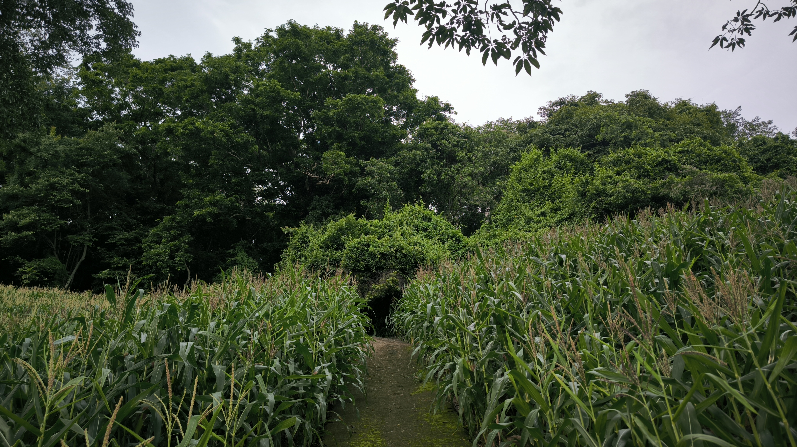
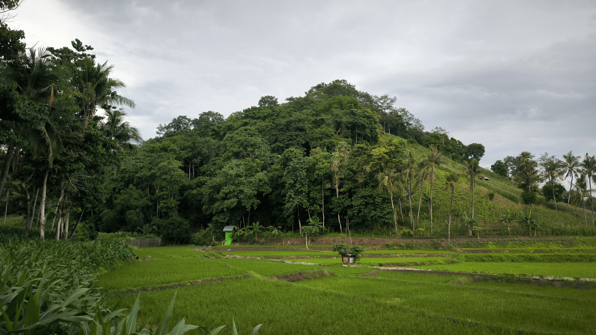

Hutan Mattatakang
Hutan Mattatakang adalah salah satu kawasan hutan bersejarah yang terletak di perbukitan bagian utara Desa Bangkalaloe, Kecamatan Bontoramba, Jeneponto, Sulawesi Selatan. Kawasan ini dikenal sebagai "Karollea" oleh masyarakat setempat dan memiliki nilai historis serta budaya yang tinggi. Pada masa praislam Karollea adalah pusat kegiatan upacara ritual pemujaan (anismisme-dinamisme) sehingga masih dikeramatkan
Hutan ini juga kaya akan keanekaragaman hayati. Pada Juli 2024, sekelompok peneliti dari KKN Jurusan Kehutanan Universitas Gadjah Mada (UGM) Yogyakarta secara tidak sengaja menemukan jenis pohon langka di Hutan Mattatakang. Pohon tersebut berasal dari spesies Gyrocarpus americanus, yang umumnya ditemukan di Amerika Latin, Nusa Tenggara, dan Jawa. Penemuan ini menunjukkan potensi besar Hutan Mattatakang sebagai kawasan konservasi flora langka.


